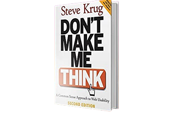

Recommended
books
Don’t make me think by Steve krug
This book is a highly influential book on web design and usability, offering straightforward principles for creating intuitive and user-friendly websites. Krug’s practical advice helps designers streamline their interfaces and ensure that users can navigate and understand their sites effortlessly.

Available Books

"The Design of Everyday Things"
by Don Norman
This book explores design principles from a psychological perspective, focusing on how design impacts user behavior and experience. It’s essential for understanding the underlying principles of user-centered design.

"Lean UX” by Jeff Gothelf and Josh Seiden
This book introduces the Lean UX methodology, which integrates UX design with Agile development. It emphasizes collaboration, iteration, and user feedback to create effective user experiences.